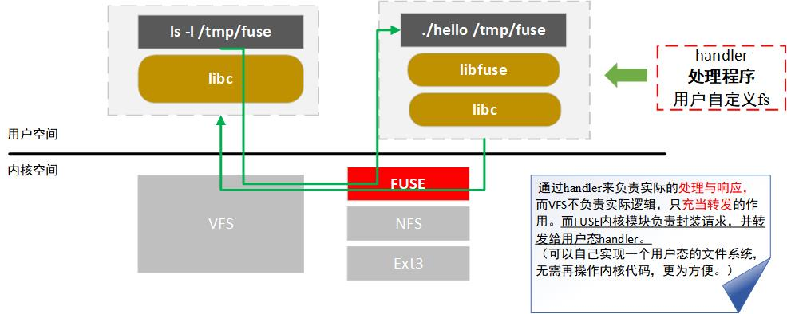

初识FUSE（Filesystem in userspace）
之前因为一次作业有幸接触过FUSE,觉得它是一个很不错的框架，没来得及仔细了解。现在有点时间了，想要利用它做一个文件系统，便系统地去学习一下，在这里简单做个总结。
什么是FUSE？
FUSE is a userspace filesystem framework.
FUSE（全称Filesystem In Userspace）是一个用户空间的文件系统框架，也就是说能够允许用户在用户空间创建并管理文件系统。它由三部分组件组成：
- 内核模块（
fuse.ko）：协议封装和解析，封装转发由VFS转发过来的请求给用户态程序 - 用户空间库（
libfuse.*）：协议解析和封装，负责解析由内核模块封装好的IO请求 - 挂载工具（
fusemount）：用户态文件系统挂载
用户态文件系统是区别于内核文件系统的，在用户态文件系统没有出现之前，常见的文件系统如Ext2、Ext4等都是在内核中直接实现的，这就很容易引发一个问题：（开发角度）调试困难；（使用角度）需要提权（root）。而用户态文件系统框架FUSE提供了这样一个机会：能保证安全且不需要提权，开发过程中也易调试。但需要考虑到的是：FUSE作为一层框架，相当于在原有的文件系统上套了一层代理，相比原来内核实现的文件系统，会带来更多的性能开销。
FUSE原理
FUSE的工作流程可以用下图表示：

从图中可以看到，当用户空间发起request(ls -l /tmp/fuse)时，首先VFS获得请求（经由系统调用，再根据挂载点分析文件系统）并转发到内核模块中的FUSE，该框架按照预先定义好的协议将请求进行封装，并将封装好的请求发送给处理程序，而处理程序会解析该请求为原始请求并完成对应处理（利用libfuse），再按原路返回，由VFS将数据进行返回给用户空间。
在这里有一个注意的点：处理程序是如何和FUSE传输数据的？是/dev/fuse虚拟块设备，当FUSE将请求打包成特定格式后，会将数据放置于/dev/fuse中，而守护进程（在用户空间侧）监听到有消息后会立即读取来处理。
FUSE协议
在struct fuse_req（向客户端发出的请求）的源码可以找到两个请求头struct fuse_in_header和struct fuse_out_header：
1 | |
struct fuse_in_header的定义（内核中、libfuse中均有定义）：
1 | |
在请求头之后一般会紧接着一个请求体，类似于http协议，而请求体的大小是可变的（这跟发出请求后携带的实际数据大小有关的，可以通过opcode操作码来进行判断）
struct fuse_out_header的定义：
1 | |
这个响应头也是类似于请求头，当处理程序完成对请求头的处理后，会根据协议将结果进行封装传回内核中，这就会用到响应头（如果携带有响应数据的话还会包含一个响应体）。在这个过程中，内核是通过unique标识请求的。
如何去使用？
在libfuse的官方开源代码介绍中提到了这个库提供了两种API:
high-level：同步API,处理工作主要是与文件名称file name，文件路径path处理相关，并且当回调函数返回时请求处理完成。low-level：异步API,所处理的必须是跟索引节点inode相关（相对来说要更加地熟悉底层文件系统实现的细节），响应必须使用一组单独的API函数显示发送。
具体如何使用，请查阅源码中所提供的例子。